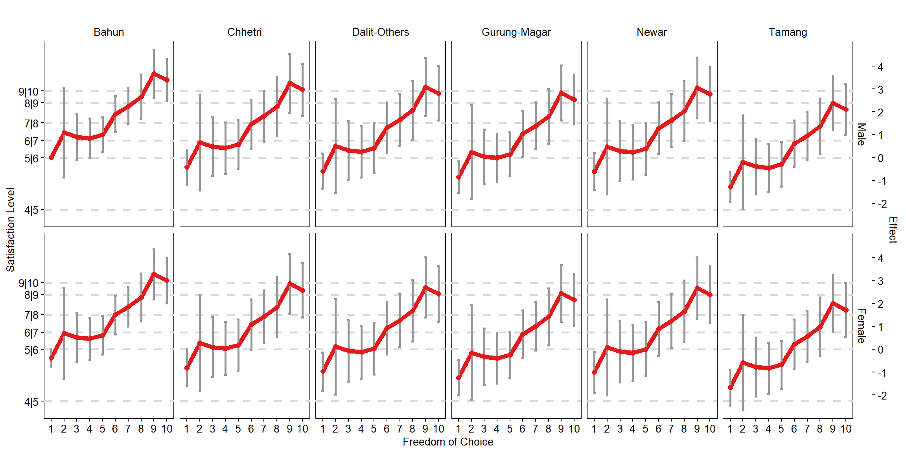
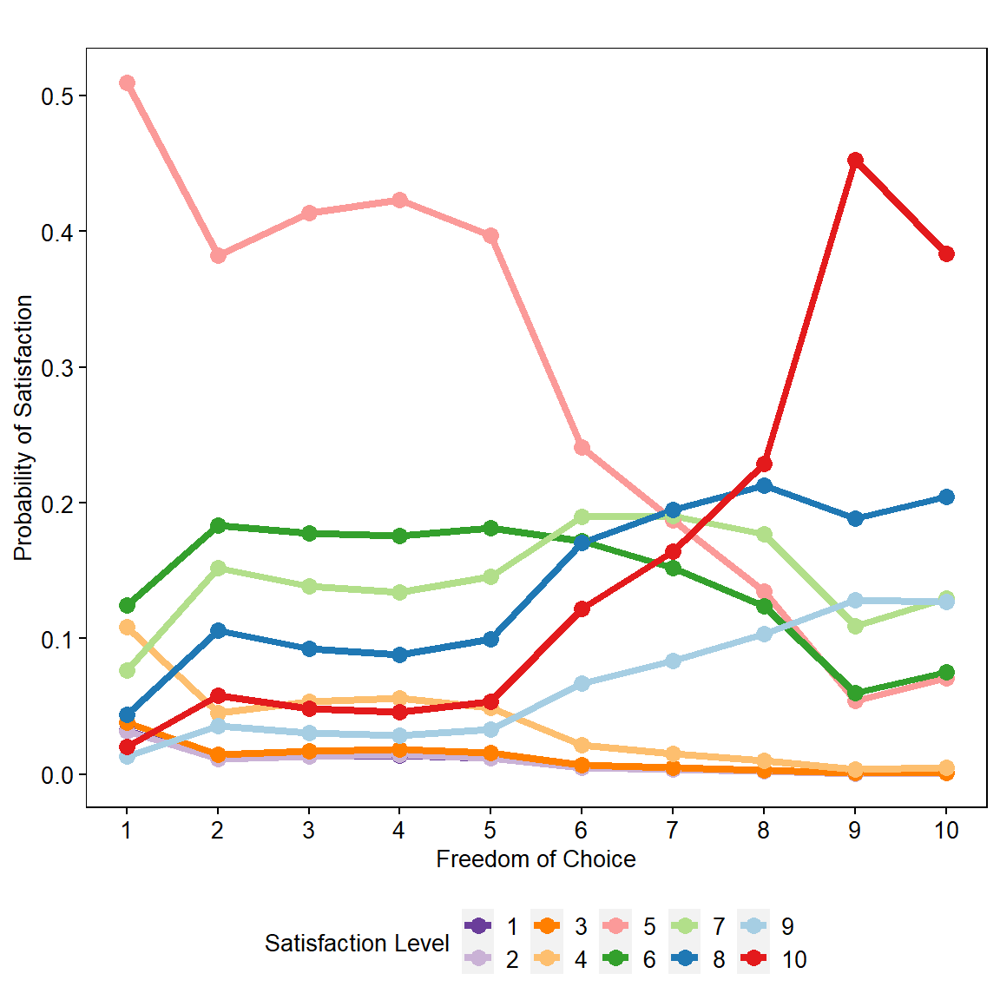

library("stringr")
library("MASS")
library("dplyr")
library("car")
library("knitr")
library("effects")
library("ggplot2")
library("gridExtra")
library("brant")
library("VGAM")
library("sandwich")
library("lmtest")dir.wrk <- getwd()
dir.data <- file.path(dir.wrk, "dataset/data")
dir.annot <- file.path(dir.wrk, "dataset/annotation")file.dat <- file.path(dir.data, "mastertbl_household_reconstruction.tsv")dat <- read.delim(file.dat, header = TRUE, stringsAsFactors = FALSE)
# FACTORIZE ---
dat$DISTRICT <- factor(dat$DISTRICT, levels = c("Dhading", "Sindhupalchowk"))
dat$VDC_MUN <- factor(dat$VDC_MUN, levels = c("Gumdi", "Sertung", "Batase", "Pangtang"))
dat$WARD <- as.factor(dat$WARD)
dat$SEX <- factor(dat$SEX, levels = c("Male", "Female"))
dat$ETHNICITY <- factor(dat$ETHNICITY, levels = c("Bahun", "Chhetri", "Dalit-Others",
"Gurung-Magar", "Newar", "Tamang"))
dat$EDUCATION_LEVEL <- factor(dat$EDUCATION_LEVEL, levels = c("Illiterate", "Primary",
"Secondary", "University"))
dat$OCCUPATION <- factor(dat$OCCUPATION, levels = c("Agriculture", "Business", "Goverment Employee",
"Labour", "Teacher"))
dat$INCOME_LEVEL <- factor(dat$INCOME_LEVEL, levels = c("0-2.5K", "2.5-10K", "10-20K",
"20-40K", "40-60K", "60K-Above"))
dat$RECON_COMPLETED <- as.factor(dat$RECON_COMPLETED)
dat$SATISFACTION_LEVEL <- as.factor(dat$SATISFACTION_LEVEL)
dat$FREEDOM_CHOICE <- as.factor(dat$FREEDOM_CHOICE)
# str(dat)# FIT ORDERED LOGISTIC REGRESSION ---
fit.mc <- MASS::polr(SATISFACTION_LEVEL ~ SEX+ETHNICITY+FREEDOM_CHOICE+EDUCATION_LEVEL+OCCUPATION+RECON_COMPLETED+DISTRICT+INCOME_LEVEL+AGE, data=dat, Hess=TRUE, method="logistic")
# CALCULATE P-VALUE ---
summary_table <- coef(summary(fit.mc))
pval <- pnorm(abs(summary_table[, "t value"]), lower.tail=FALSE)* 2
summary_table <- cbind(summary_table, "p value"=round(pval,4))
# CALCULATE LOG-ODDS RATIO ---
tbl_oddratio <- exp(cbind(OddRatio=coef(fit.mc), confint(fit.mc, level=0.95)))
# AGGREGATE DATA ---
summary_table_var <- as.data.frame(cbind(summary_table[1:nrow(tbl_oddratio),], tbl_oddratio))
rmarkdown::paged_table(format(summary_table_var, digits=3), options=list(rows.print=10)) # ANOVA
car::Anova(fit.mc)## Analysis of Deviance Table (Type II tests)
##
## Response: SATISFACTION_LEVEL
## LR Chisq Df Pr(>Chisq)
## SEX 5.036 1 0.024823 *
## ETHNICITY 18.175 5 0.002734 **
## FREEDOM_CHOICE 103.834 9 < 2.2e-16 ***
## EDUCATION_LEVEL 1.097 3 0.777837
## OCCUPATION 3.252 4 0.516514
## RECON_COMPLETED 4.139 4 0.387569
## DISTRICT 2.679 1 0.101701
## INCOME_LEVEL 4.282 5 0.509548
## AGE 0.419 1 0.517282
## ---
## Signif. codes: 0 '***' 0.001 '**' 0.01 '*' 0.05 '.' 0.1 ' ' 1The above analysis reveals that the effects of variables such as, location, education, income, physical level of reconstruction, and occupation on the self-reported level of happiness are not statistically significant (at 95% confidence level). However, the effects of variables such as, Sex, Ethnicity, and Freedom of Choice on the happiness level were found to statistically significant. Thus, we redo the above analysis considering only Sex, Ethinicity, and Freedom of Choice.
# FIT ORDERED LOGISTIC REGRESSION ---
fit.m <- MASS::polr(SATISFACTION_LEVEL ~ SEX+ETHNICITY+FREEDOM_CHOICE, data=dat, Hess=TRUE, method="logistic")
# CALCULATE P-VALUE ---
summary_table <- coef(summary(fit.m))
pval <- pnorm(abs(summary_table[, "t value"]), lower.tail=FALSE)* 2
summary_table <- cbind(summary_table, "p value"=round(pval,4))
# CALCULATE LOG-ODDS RATIO ---
tbl_oddratio <- exp(cbind(OddRatio=coef(fit.m), confint(fit.m, level=0.95)))
# AGGREGATE DATA ---
summary_table_var <- as.data.frame(cbind(summary_table[1:nrow(tbl_oddratio),], tbl_oddratio))
rmarkdown::paged_table(format(summary_table_var, digits=3), options=list(rows.print=10)) # SATISFACTION THRESHOLD ---
summary_table_st <- as.data.frame(summary_table[(nrow(tbl_oddratio)+1):nrow(summary_table),])
rmarkdown::paged_table(summary_table_st)# ANOVA
car::Anova(fit.m)## Analysis of Deviance Table (Type II tests)
##
## Response: SATISFACTION_LEVEL
## LR Chisq Df Pr(>Chisq)
## SEX 4.008 1 0.045273 *
## ETHNICITY 18.659 5 0.002224 **
## FREEDOM_CHOICE 105.780 9 < 2.2e-16 ***
## ---
## Signif. codes: 0 '***' 0.001 '**' 0.01 '*' 0.05 '.' 0.1 ' ' 1#lmtest::coeftest(fit.m, vcov = sandwich::vcovHC(fit.m, type = "HC0"))
coef_t <- lmtest::coeftest(fit.m)
coef_t##
## t test of coefficients:
##
## Estimate Std. Error t value Pr(>|t|)
## SEXFemale -0.38499 0.19275 -1.9973 0.0465478 *
## ETHNICITYChhetri -0.42708 0.38381 -1.1127 0.2665783
## ETHNICITYDalit-Others -0.58535 0.38720 -1.5117 0.1314839
## ETHNICITYGurung-Magar -0.85210 0.34787 -2.4495 0.0147853 *
## ETHNICITYNewar -0.61719 0.41166 -1.4993 0.1346887
## ETHNICITYTamang -1.29017 0.33836 -3.8130 0.0001617 ***
## FREEDOM_CHOICE2 1.08959 1.00006 1.0895 0.2766578
## FREEDOM_CHOICE3 0.90142 0.51501 1.7503 0.0809288 .
## FREEDOM_CHOICE4 0.84210 0.44009 1.9135 0.0564880 .
## FREEDOM_CHOICE5 1.00371 0.39180 2.5618 0.0108239 *
## FREEDOM_CHOICE6 1.89603 0.40407 4.6924 3.853e-06 ***
## FREEDOM_CHOICE7 2.24556 0.40651 5.5239 6.398e-08 ***
## FREEDOM_CHOICE8 2.65805 0.50061 5.3097 1.935e-07 ***
## FREEDOM_CHOICE9 3.68063 0.53650 6.8605 3.041e-11 ***
## FREEDOM_CHOICE10 3.39775 0.46811 7.2584 2.465e-12 ***
## ---
## Signif. codes: 0 '***' 0.001 '**' 0.01 '*' 0.05 '.' 0.1 ' ' 1#robust_sr <- sqrt(diag( sandwich::vcovHC(fit.m, type = "HC0") ))
#y_or <- exp(coef(fit.m))
#robust_or <- cbind(coef_t, y_or, LL=exp(coef(fit.m) - 1.96 * robust_sr), UL = exp(coef(fit.m) + 1.96 * robust_sr))
#robust_orsuppressWarnings(brant::brant(fit.m))## ----------------------------------------------------
## Test for X2 df probability
## ----------------------------------------------------
## Omnibus 5928.51 120 0
## SEXFemale 27.11 8 0
## ETHNICITYChhetri 2.2 8 0.97
## ETHNICITYDalit-Others 2.17 8 0.98
## ETHNICITYGurung-Magar 2.86 8 0.94
## ETHNICITYNewar 5.42 8 0.71
## ETHNICITYTamang 1.9 8 0.98
## FREEDOM_CHOICE2 19.35 8 0.01
## FREEDOM_CHOICE3 9.99 8 0.27
## FREEDOM_CHOICE4 10.65 8 0.22
## FREEDOM_CHOICE5 10.2 8 0.25
## FREEDOM_CHOICE6 27.36 8 0
## FREEDOM_CHOICE7 25.44 8 0
## FREEDOM_CHOICE8 13.19 8 0.11
## FREEDOM_CHOICE9 4.92 8 0.77
## FREEDOM_CHOICE10 12.01 8 0.15
## ----------------------------------------------------
##
## H0: Parallel Regression Assumption holds## X2 df probability
## Omnibus 5928.509021 120 0.0000000000
## SEXFemale 27.112382 8 0.0006760777
## ETHNICITYChhetri 2.199557 8 0.9742745286
## ETHNICITYDalit-Others 2.166315 8 0.9754837970
## ETHNICITYGurung-Magar 2.864757 8 0.9425557787
## ETHNICITYNewar 5.419212 8 0.7119732074
## ETHNICITYTamang 1.898275 8 0.9839731742
## FREEDOM_CHOICE2 19.347883 8 0.0131058967
## FREEDOM_CHOICE3 9.988154 8 0.2658583091
## FREEDOM_CHOICE4 10.648955 8 0.2223939392
## FREEDOM_CHOICE5 10.203099 8 0.2510594492
## FREEDOM_CHOICE6 27.361064 8 0.0006123065
## FREEDOM_CHOICE7 25.436778 8 0.0013104830
## FREEDOM_CHOICE8 13.187097 8 0.1055722918
## FREEDOM_CHOICE9 4.919087 8 0.7661881672
## FREEDOM_CHOICE10 12.009860 8 0.1507645135or_boot <- suppressWarnings(car::Boot(fit.m, f = function(fit.m) exp(coef(fit.m)), R=1000))
df.or_boot <- format(as.data.frame(confint(or_boot, type="bca")), digits=3, scientific=FALSE)
knitr::kable(df.or_boot, align="ll")| 2.5 % | 97.5 % | |
|---|---|---|
| SEXFemale | 0.4544 | 0.999 |
| ETHNICITYChhetri | 0.3086 | 1.523 |
| ETHNICITYDalit-Others | 0.2478 | 1.204 |
| ETHNICITYGurung-Magar | 0.2143 | 0.867 |
| ETHNICITYNewar | 0.2386 | 1.258 |
| ETHNICITYTamang | 0.1316 | 0.542 |
| FREEDOM_CHOICE2 | 0.0795 | 62.753 |
| FREEDOM_CHOICE3 | 0.7449 | 6.640 |
| FREEDOM_CHOICE4 | 0.7409 | 6.631 |
| FREEDOM_CHOICE5 | 1.1123 | 5.945 |
| FREEDOM_CHOICE6 | 2.7608 | 14.790 |
| FREEDOM_CHOICE7 | 3.5083 | 20.042 |
| FREEDOM_CHOICE8 | 2.8888 | 32.415 |
| FREEDOM_CHOICE9 | 10.4662 | 117.713 |
| FREEDOM_CHOICE10 | 7.5930 | 91.723 |
beta_boot <- suppressWarnings(car::Boot(fit.m, R=1000))
df.beta_boot <- format(as.data.frame(confint(beta_boot, type="bca")), digits=3, scientific=FALSE)
knitr::kable(df.beta_boot, align="ll")| 2.5 % | 97.5 % | |
|---|---|---|
| SEXFemale | -0.793 | 0.030 |
| ETHNICITYChhetri | -1.128 | 0.445 |
| ETHNICITYDalit-Others | -1.266 | 0.173 |
| ETHNICITYGurung-Magar | -1.546 | -0.146 |
| ETHNICITYNewar | -1.402 | 0.283 |
| ETHNICITYTamang | -1.936 | -0.543 |
| FREEDOM_CHOICE2 | -2.461 | 4.356 |
| FREEDOM_CHOICE3 | -0.357 | 2.030 |
| FREEDOM_CHOICE4 | -0.235 | 1.724 |
| FREEDOM_CHOICE5 | 0.154 | 1.828 |
| FREEDOM_CHOICE6 | 1.024 | 2.658 |
| FREEDOM_CHOICE7 | 1.363 | 3.015 |
| FREEDOM_CHOICE8 | 1.512 | 3.664 |
| FREEDOM_CHOICE9 | 2.326 | 4.695 |
| FREEDOM_CHOICE10 | 2.168 | 4.549 |
# EFFECT OF THE FITTED MODEL ---
ef1 <- effects::Effect(focal.predictors="FREEDOM_CHOICE", mod=fit.m,
xlevels=list(FREEDOM_CHOICE = 1:10, 2), latent = TRUE)
#plot(ef1, rug=FALSE)#### FUNCTION: plotEffect()
plotEffect <- function(ef.obj){
# PREPARE DATA ---
df <- cbind(ef.obj$x, fit=ef.obj$fit, upper=ef.obj$upper, lower=ef.obj$lower)
dt <- data.frame(Level=names(ef.obj$thresholds), thresholds=ef.obj$thresholds)
# FACTORIZE ---
df$FREEDOM_CHOICE <- as.numeric(as.character(df$FREEDOM_CHOICE))
# PLOT ---
p <- ggplot(data = df, aes(x=FREEDOM_CHOICE, y=fit)) +
geom_hline(yintercept = dt$thresholds[5:9], color="#D9D9D9", size=1, linetype=2) +
#geom_ribbon(aes(ymin=lower, ymax=upper), fill="#D9D9D9", alpha=0.5) +
geom_line(aes(y = fit), color="#E31A1C", size=1.5) +
geom_errorbar(data=df, aes(x=FREEDOM_CHOICE, ymin=upper, ymax=lower), width=0.2, size=1, color="#969696") +
geom_point(color="#E31A1C", size=3) +
scale_x_continuous(breaks=c(1:10), labels=c(1:10)) +
scale_y_continuous(breaks=dt$thresholds, labels=dt$Level, name="Satisfaction Level",
sec.axis=sec_axis(~.*1,name="Effect", breaks=seq(-2,4,1), labels=seq(-2,4,1))) +
theme(
axis.text.x = element_text(size = 10, color="#000000"),
axis.text.y = element_text(size = 10, color="#000000"),
axis.title = element_text(size = 10, color="#000000"),
plot.title = element_text(size = 10, color="#000000", hjust=0.5),
panel.grid.major = element_blank(),
panel.grid.minor = element_blank(),
axis.ticks = element_line(size=0.4, color="#000000"),
strip.text = element_text(size=10, color="#000000"),
strip.background = element_rect(fill="#FFFFFF", color="#FFFFFF"),
panel.background = element_rect(fill="#FFFFFF", color="#000000"),
legend.text = element_text(size = 10, color="#000000"),
legend.title = element_blank(),
legend.key.size = unit(0.5, "cm"),
legend.position = "none") +
ylab("Effect") +
xlab("Freedom of Choice") +
ggtitle("")
return(p)
}plotEffect(ef.obj=ef1)
# EFFECT OF THE FITTED MODEL ---
ef2 <- effects::Effect(focal.predictors=c("SEX","FREEDOM_CHOICE","ETHNICITY"), mod=fit.m,
xlevels=list(FREEDOM_CHOICE = 1:10), latent = TRUE)
#plot(ef2, rug = FALSE, ylim = c(-2.0,4.5))# FUNCTION: plotEffect_MultiVar()
plotEffect_MultiVar <- function(ef.obj){
# PREPARE DATA ---
df <- cbind(ef.obj$x, fit=ef.obj$fit, upper=ef.obj$upper, lower=ef.obj$lower)
dt <- data.frame(Level=names(ef.obj$thresholds), thresholds=ef.obj$thresholds)
# FACTORIZE ---
df$FREEDOM_CHOICE <- as.numeric(as.character(df$FREEDOM_CHOICE))
df$SEX <- factor(df$SEX, levels=c("Male","Female"))
df$ETHNICITY <- factor(df$ETHNICITY, levels=c("Bahun","Chhetri","Dalit-Others","Gurung-Magar","Newar","Tamang"))
# PLOT ---
p <- ggplot(data = df, aes(x=FREEDOM_CHOICE, y=fit)) +
geom_hline(yintercept = dt$thresholds[4:9], color="#D9D9D9", size=1, linetype=2) +
#geom_ribbon(aes(ymin=lower, ymax=upper), fill="#D9D9D9", alpha=0.5) +
geom_line(aes(y = fit), color="#E31A1C", size=2) +
geom_errorbar(data=df, aes(x=FREEDOM_CHOICE, ymin=upper, ymax=lower), width=0.2, size=1, color="#969696") +
geom_point(color="#E31A1C", size=2) +
scale_x_continuous(breaks=c(1:10), labels=c(1:10)) +
scale_y_continuous(breaks=dt$thresholds, labels=dt$Level, name="Satisfaction Level",
sec.axis=sec_axis(~.*1,name="Effect", breaks=seq(-2,4,1), labels=seq(-2,4,1))) +
#facet_grid(ETHNICITY~SEX, scales="fixed", space="fixed") +
facet_grid(SEX~ETHNICITY, scales="fixed", space="fixed") +
theme(
axis.text.x = element_text(size = 10, color="#000000"),
axis.text.y = element_text(size = 10, color="#000000"),
axis.title = element_text(size = 10, color="#000000"),
plot.title = element_text(size = 10, color="#000000", hjust=0.5),
panel.grid.major = element_blank(),
panel.grid.minor = element_blank(),
axis.ticks = element_line(size=0.4, color="#000000"),
strip.text = element_text(size=10, color="#000000"),
strip.background = element_rect(fill="#FFFFFF", color="#FFFFFF"),
panel.background = element_rect(fill="#FFFFFF", color="#000000"),
legend.text = element_text(size = 10, color="#000000"),
legend.title = element_blank(),
legend.key.size = unit(0.5, "cm"),
legend.position = "none") +
ylab("Effect") +
xlab("Freedom of Choice") +
ggtitle("")
return(p)
}plotEffect_MultiVar(ef.obj=ef2)
ef3 <- effects::Effect(focal.predictors="FREEDOM_CHOICE", mod=fit.m,
xlevels=list(FREEDOM_CHOICE = 1:10, 2))
#plot(ef3, lines=list(multiline=TRUE), rug=FALSE)#### FUNCTION: plotEffect()
plotProbEffect <- function(ef.obj){
# PREPARE DATA ---
df <- cbind(ef.obj$x, ef.obj$prob)
# RESHAPE DATA ---
dm <- reshape2::melt(df, id.vars="FREEDOM_CHOICE", value.name="PROBABILITY")
colnames(dm) <- c("FREEDOM_CHOICE","SATISFACTION_LEVEL","PROBABILITY")
dm$SATISFACTION_LEVEL <- str_replace_all(dm$SATISFACTION_LEVEL, "prob.X", "")
# FACTORIZE ---
dm$FREEDOM_CHOICE <- as.numeric(as.character(dm$FREEDOM_CHOICE))
dm$SATISFACTION_LEVEL <- as.factor(as.numeric(dm$SATISFACTION_LEVEL))
# COLOR PALETTE
cpalette <- rev(c("#e31a1c","#a6cee3","#1f78b4","#b2df8a","#33a02c",
"#fb9a99","#fdbf6f","#ff7f00","#cab2d6","#6a3d9a"))
# PLOT ---
p <- ggplot(data = dm, aes(x=FREEDOM_CHOICE, y=PROBABILITY)) +
geom_line(aes(y=PROBABILITY, color=SATISFACTION_LEVEL), size=1.5) +
geom_point(aes(y=PROBABILITY, color=SATISFACTION_LEVEL), size=3) +
scale_x_continuous(breaks=c(1:10), labels=c(1:10)) +
scale_y_continuous(breaks=seq(0,0.6,0.1)) +
scale_color_manual(values=cpalette, name="Satisfaction Level") +
theme(
axis.text.x = element_text(size = 10, color="#000000"),
axis.text.y = element_text(size = 10, color="#000000"),
axis.title = element_text(size = 10, color="#000000"),
plot.title = element_text(size = 10, color="#000000", hjust=0.5),
panel.grid.major = element_blank(),
panel.grid.minor = element_blank(),
axis.ticks = element_line(size=0.4, color="#000000"),
strip.text = element_text(size=10, color="#000000"),
strip.background = element_rect(fill="#FFFFFF", color="#FFFFFF"),
panel.background = element_rect(fill="#FFFFFF", color="#000000"),
legend.text = element_text(size = 10, color="#000000"),
legend.title = element_text(size = 10, color="#000000"),
legend.key.size = unit(0.5, "cm"),
legend.background = element_blank(),
legend.box.background = element_blank(),
legend.position = "bottom") +
ylab("Probability of Satisfaction") +
xlab("Freedom of Choice") +
ggtitle("")
return(p)
}plotProbEffect(ef.obj=ef3)suppressWarnings(brant(fit.m))## ----------------------------------------------------
## Test for X2 df probability
## ----------------------------------------------------
## Omnibus 5928.51 120 0
## SEXFemale 27.11 8 0
## ETHNICITYChhetri 2.2 8 0.97
## ETHNICITYDalit-Others 2.17 8 0.98
## ETHNICITYGurung-Magar 2.86 8 0.94
## ETHNICITYNewar 5.42 8 0.71
## ETHNICITYTamang 1.9 8 0.98
## FREEDOM_CHOICE2 19.35 8 0.01
## FREEDOM_CHOICE3 9.99 8 0.27
## FREEDOM_CHOICE4 10.65 8 0.22
## FREEDOM_CHOICE5 10.2 8 0.25
## FREEDOM_CHOICE6 27.36 8 0
## FREEDOM_CHOICE7 25.44 8 0
## FREEDOM_CHOICE8 13.19 8 0.11
## FREEDOM_CHOICE9 4.92 8 0.77
## FREEDOM_CHOICE10 12.01 8 0.15
## ----------------------------------------------------
##
## H0: Parallel Regression Assumption holds## X2 df probability
## Omnibus 5928.509021 120 0.0000000000
## SEXFemale 27.112382 8 0.0006760777
## ETHNICITYChhetri 2.199557 8 0.9742745286
## ETHNICITYDalit-Others 2.166315 8 0.9754837970
## ETHNICITYGurung-Magar 2.864757 8 0.9425557787
## ETHNICITYNewar 5.419212 8 0.7119732074
## ETHNICITYTamang 1.898275 8 0.9839731742
## FREEDOM_CHOICE2 19.347883 8 0.0131058967
## FREEDOM_CHOICE3 9.988154 8 0.2658583091
## FREEDOM_CHOICE4 10.648955 8 0.2223939392
## FREEDOM_CHOICE5 10.203099 8 0.2510594492
## FREEDOM_CHOICE6 27.361064 8 0.0006123065
## FREEDOM_CHOICE7 25.436778 8 0.0013104830
## FREEDOM_CHOICE8 13.187097 8 0.1055722918
## FREEDOM_CHOICE9 4.919087 8 0.7661881672
## FREEDOM_CHOICE10 12.009860 8 0.1507645135m_glm <- suppressWarnings(VGAM::vglm(SATISFACTION_LEVEL~FREEDOM_CHOICE+ETHNICITY+SEX, data = dat,
family = VGAM::cumulative(link = "logitlink", parallel = TRUE, reverse = FALSE)))Anova(m_glm)## Analysis of Deviance Table (Type II tests)
##
## Response: SATISFACTION_LEVEL
## Df Chisq Pr(>Chisq)
## FREEDOM_CHOICE 9 104.8817 < 2.2e-16 ***
## ETHNICITY 5 18.5139 0.002367 **
## SEX 1 3.9999 0.045502 *
## ---
## Signif. codes: 0 '***' 0.001 '**' 0.01 '*' 0.05 '.' 0.1 ' ' 1summary(m_glm)##
## Call:
## VGAM::vglm(formula = SATISFACTION_LEVEL ~ FREEDOM_CHOICE + ETHNICITY +
## SEX, family = VGAM::cumulative(link = "logitlink", parallel = TRUE,
## reverse = FALSE), data = dat)
##
## Coefficients:
## Estimate Std. Error z value Pr(>|z|)
## (Intercept):1 -4.354025 0.638561 -6.818 9.20e-12 ***
## (Intercept):2 -3.637775 0.533109 -6.824 8.87e-12 ***
## (Intercept):3 -3.125420 0.487341 -6.413 1.42e-10 ***
## (Intercept):4 -2.276158 0.446475 -5.098 3.43e-07 ***
## (Intercept):5 -0.008954 0.431941 -0.021 0.983461
## (Intercept):6 0.742839 0.434555 1.709 0.087372 .
## (Intercept):7 1.517922 0.438535 3.461 0.000537 ***
## (Intercept):8 2.396974 0.445326 5.383 7.35e-08 ***
## (Intercept):9 2.914447 0.451573 6.454 1.09e-10 ***
## FREEDOM_CHOICE2 -1.090869 0.711163 -1.534 0.125049
## FREEDOM_CHOICE3 -0.901337 0.514888 -1.751 0.080024 .
## FREEDOM_CHOICE4 -0.842026 0.426266 -1.975 0.048228 *
## FREEDOM_CHOICE5 -1.003626 0.384186 -2.612 0.008992 **
## FREEDOM_CHOICE6 -1.895944 0.405236 -4.679 2.89e-06 ***
## FREEDOM_CHOICE7 -2.245502 0.407632 -5.509 3.62e-08 ***
## FREEDOM_CHOICE8 -2.657949 0.516012 -5.151 2.59e-07 ***
## FREEDOM_CHOICE9 -3.680532 0.533739 -6.896 5.36e-12 ***
## FREEDOM_CHOICE10 -3.397616 0.432264 -7.860 3.84e-15 ***
## ETHNICITYChhetri 0.427046 0.386501 1.105 0.269202
## ETHNICITYDalit-Others 0.585372 0.393843 1.486 0.137198
## ETHNICITYGurung-Magar 0.852089 0.352033 2.420 0.015500 *
## ETHNICITYNewar 0.617323 0.418800 1.474 0.140474
## ETHNICITYTamang 1.290198 0.339337 3.802 0.000143 ***
## SEXFemale 0.385026 0.192515 2.000 0.045502 *
## ---
## Signif. codes: 0 '***' 0.001 '**' 0.01 '*' 0.05 '.' 0.1 ' ' 1
##
## Number of linear predictors: 9
##
## Names of linear predictors: logitlink(P[Y<=1]), logitlink(P[Y<=2]),
## logitlink(P[Y<=3]), logitlink(P[Y<=4]), logitlink(P[Y<=5]), logitlink(P[Y<=6]),
## logitlink(P[Y<=7]), logitlink(P[Y<=8]), logitlink(P[Y<=9])
##
## Residual deviance: 1339.561 on 3405 degrees of freedom
##
## Log-likelihood: -669.7804 on 3405 degrees of freedom
##
## Number of Fisher scoring iterations: 9
##
## Warning: Hauck-Donner effect detected in the following estimate(s):
## '(Intercept):1'
##
##
## Exponentiated coefficients:
## FREEDOM_CHOICE2 FREEDOM_CHOICE3 FREEDOM_CHOICE4
## 0.33592444 0.40602629 0.43083678
## FREEDOM_CHOICE5 FREEDOM_CHOICE6 FREEDOM_CHOICE7
## 0.36654797 0.15017654 0.10587437
## FREEDOM_CHOICE8 FREEDOM_CHOICE9 FREEDOM_CHOICE10
## 0.07009183 0.02520957 0.03345291
## ETHNICITYChhetri ETHNICITYDalit-Others ETHNICITYGurung-Magar
## 1.53272281 1.79565969 2.34454039
## ETHNICITYNewar ETHNICITYTamang SEXFemale
## 1.85395840 3.63350533 1.46965287is.parallel(m_glm)## (Intercept) FREEDOM_CHOICE ETHNICITY SEX
## FALSE TRUE TRUE TRUEdat$SATISFACTION_LEVEL <- as.numeric(dat$SATISFACTION_LEVEL)
fit_lin <- lm(SATISFACTION_LEVEL~SEX+ETHNICITY+FREEDOM_CHOICE, data=dat)
lmtest::coeftest(fit_lin, vcov = sandwich::vcovHC(fit_lin, type = "HC0"))##
## t test of coefficients:
##
## Estimate Std. Error t value Pr(>|t|)
## (Intercept) 6.22825 0.43780 14.2264 < 2.2e-16 ***
## SEXFemale -0.24011 0.17847 -1.3454 0.1793355
## ETHNICITYChhetri -0.44600 0.36866 -1.2098 0.2271474
## ETHNICITYDalit-Others -0.73752 0.36165 -2.0393 0.0421384 *
## ETHNICITYGurung-Magar -0.87009 0.34342 -2.5336 0.0117070 *
## ETHNICITYNewar -0.60366 0.38294 -1.5764 0.1158059
## ETHNICITYTamang -1.35496 0.32976 -4.1090 4.911e-05 ***
## FREEDOM_CHOICE2 0.79425 1.13869 0.6975 0.4859261
## FREEDOM_CHOICE3 0.50397 0.49797 1.0120 0.3121921
## FREEDOM_CHOICE4 0.72167 0.43444 1.6611 0.0975450 .
## FREEDOM_CHOICE5 0.86855 0.41681 2.0838 0.0378716 *
## FREEDOM_CHOICE6 1.52355 0.40522 3.7599 0.0001979 ***
## FREEDOM_CHOICE7 1.97191 0.41256 4.7797 2.549e-06 ***
## FREEDOM_CHOICE8 2.34964 0.50468 4.6557 4.527e-06 ***
## FREEDOM_CHOICE9 3.35176 0.48352 6.9321 1.890e-11 ***
## FREEDOM_CHOICE10 2.79334 0.48732 5.7321 2.080e-08 ***
## ---
## Signif. codes: 0 '***' 0.001 '**' 0.01 '*' 0.05 '.' 0.1 ' ' 1